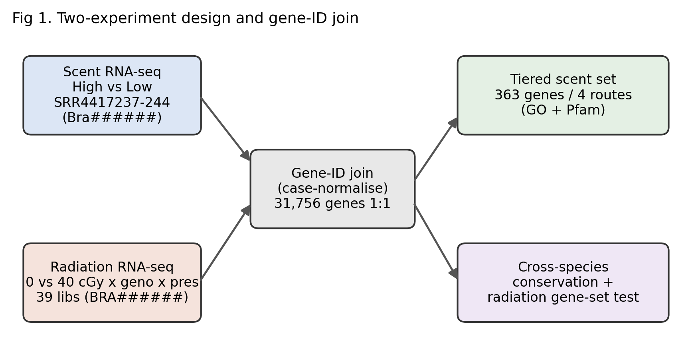
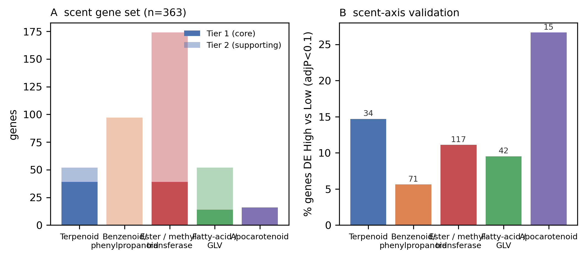
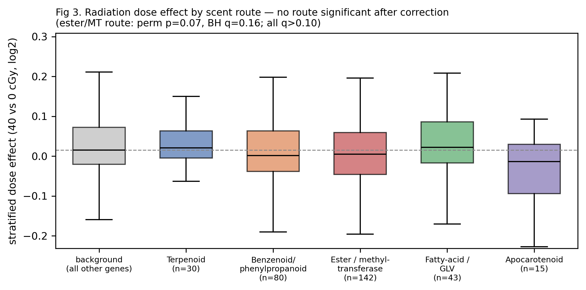
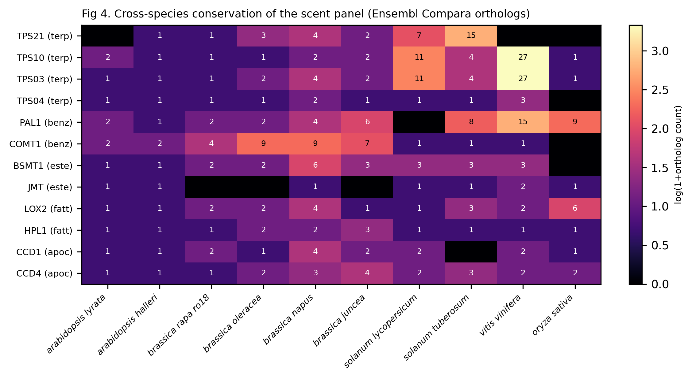

Figures




Tables
Table 1. Composition of the curated floral-scent gene set in B. rapa (363 genes).
| Biosynthetic route | Tier 1 (core enzymes) | Tier 2 (supporting) | Total | Example families |
|---|---|---|---|---|
| Terpenoid | 39 | 13 | 52 | terpene synthases (TPS) |
| Benzenoid / phenylpropanoid | 0 | 97 | 97 | PAL, O-methyltransferases |
| Ester / methyltransferase | 39 | 135 | 174 | SABATH MTs, BAHD acyltransferases |
| Fatty-acid / GLV | 14 | 38 | 52 | lipoxygenase (LOX), HPL |
| Apocarotenoid | 16 | 0 | 16 | carotenoid cleavage dioxygenases (CCD) |
| All routes | 108 | 255 | 363 | — |
Table 2. Candidate genes: scent-associated (High vs Low, adjP<0.1) and their radiation dose effect. Note: the scent set as a whole is NOT significantly radiation-responsive after correction (see Fig 3); these are individual candidates, not a validated hit list.
| Gene (Bra) | Route | Tier | Radiation dose effect (40 vs 0 cGy, log2) | Scent High/Low log2FC | Scent adjP | Enzyme evidence |
|---|---|---|---|---|---|---|
| Bra028893 | Ester / methyltransferase | 2 | -0.56 | +1.21 | 0.014 | T2 Pfam:PF02458 BAHD acyltransferase (vola |
| Bra012779 | Terpenoid | 2 | +0.37 | -0.47 | 0.0028 | T2 GO:0016114 terpenoid biosynthetic proce |
| Bra009460 | Ester / methyltransferase | 1 | -0.23 | -1.70 | 0.0089 | T1 Pfam:PF03492 SABATH methyltransferase ( |
| Bra012138 | Ester / methyltransferase | 2 | -0.22 | +0.37 | 0.033 | T2 Pfam:PF02458 BAHD acyltransferase (vola |
| Bra014354 | Benzenoid / phenylpropanoid | 2 | -0.11 | +0.69 | 0.078 | T2 GO:0009699 phenylpropanoid biosynthetic |
| Bra028224 | Ester / methyltransferase | 2 | +0.10 | +0.72 | 0.03 | T2 Pfam:PF02458 BAHD acyltransferase (vola |
| Bra020970 | Apocarotenoid | 1 | +0.09 | +1.50 | 0.016 | T1 Pfam:PF03055 carotenoid cleavage dioxyg |
| Bra013161 | Fatty-acid / GLV | 2 | +0.09 | +0.50 | 0.01 | T2 GO:0009695 jasmonic acid biosynthetic p |
| Bra019582 | Ester / methyltransferase | 2 | -0.08 | +1.77 | 0.088 | T2 Pfam:PF02458 BAHD acyltransferase (vola |
| Bra040746 | Ester / methyltransferase | 2 | +0.08 | -0.94 | 0.042 | T2 GO:0080032 methyl jasmonate esterase ac |
| Bra032359 | Apocarotenoid | 1 | -0.07 | +2.29 | 0.00054 | T1 Pfam:PF03055 carotenoid cleavage dioxyg |
| Bra039556 | Ester / methyltransferase | 2 | -0.06 | -2.73 | 0.00023 | T2 Pfam:PF02458 BAHD acyltransferase (vola |
Table 3. Characterised floral-scent genes in model scent species absent from Ensembl Plants (literature-curated; NCBI/UniProt accessions verified where fetched).
| Species | Gene | Enzyme / role | Route | Volatile product | Family | NCBI/UniProt | Reference |
|---|---|---|---|---|---|---|---|
| Petunia hybrida | PhPAL1/PhPAL2 | phenylalanine ammonia-lyase | benzenoid phenylpropanoid | (pathway entry) | PAL | Verdonk 2005 Plant Cell (PMID 15805488) | |
| Petunia hybrida | PhPAAS | phenylacetaldehyde synthase | benzenoid phenylpropanoid | 2-phenylacetaldehyde | aromatic AAAD | Kaminaga 2006 JBC | |
| Petunia hybrida | PhBPBT | benzoyl-CoA:benzyl/phenylethanol benzoyltransferase | ester | benzylbenzoate/phenylethylbenzoate | BAHD acyltransferase | sp|Q6E593.1|BEBT1_PETHY | Boatright 2004 Plant Physiol |
| Petunia hybrida | PhBSMT1/2 | benzoic/salicylic acid carboxyl methyltransferase | ester | methylbenzoate | SABATH methyltransferase | sp|A4ZDG8.1|BSMT3_PETHY | Negre 2003 Plant Cell; Underwood 2005 |
| Petunia hybrida | PhCFAT | coniferyl alcohol acyltransferase | benzenoid phenylpropanoid | (isoeugenol precursor) | BAHD acyltransferase | Dexter 2007 Plant J | |
| Petunia hybrida | PhIGS1 | isoeugenol synthase | benzenoid phenylpropanoid | isoeugenol | PIP/NADPH reductase | Koeduka 2008 | |
| Petunia hybrida | PhODO1 | R2R3-MYB regulator | regulator | (activates benzenoid genes) | MYB TF | sp|Q50EX6.1|ODO1_PETHY | Verdonk 2005 Plant Cell (PMID 15805488) |
| Petunia hybrida | PhEOBI/PhEOBII | R2R3-MYB regulators | regulator | (activate ODO1 + scent genes) | MYB TF | Spitzer-Rimon 2010/2012 Plant Cell | |
| Antirrhinum majus | AmNES/LIS-1,-2 | nerolidol/linalool synthase | terpenoid | linalool, (E)-nerolidol | terpene synthase (TPS) | ABR24418.1 | Nagegowda 2008 Plant J (PMID 18363779) |
| Antirrhinum majus | AmMYS | myrcene synthase | terpenoid | myrcene | terpene synthase (TPS) | Dudareva 2003 Plant Cell | |
| Antirrhinum majus | AmOCS | (E)-beta-ocimene synthase | terpenoid | (E)-beta-ocimene | terpene synthase (TPS) | Dudareva 2003 Plant Cell | |
| Antirrhinum majus | AmBAMT | benzoic acid carboxyl methyltransferase | ester | methylbenzoate | SABATH methyltransferase | sp|Q9FYZ9.1|BAMT_ANTMA | Dudareva 2000 (seminal floral SABATH) |
| Rosa x hybrida | RhNUDX1 | Nudix hydrolase (GPP diphosphohydrolase) | terpenoid | geraniol (non-canonical route) | Nudix hydrolase | sp|M4I1C6.1|NUDT1_ROSHC | Magnard 2015 Science (PMID 26138978) |
| Rosa x hybrida | RhLINS/RhNES | linalool / nerolidol synthase | terpenoid | linalool, nerolidol | terpene synthase (TPS) | Conart 2019 Plant Physiol | |
| Rosa x hybrida | RhOMT1/2 | orcinol O-methyltransferase | benzenoid phenylpropanoid | 3,5-dimethoxytoluene | O-methyltransferase | AAM23005.1 | Lavid 2002 Plant Physiol |
| Rosa x hybrida | RhAAT1 | alcohol acyltransferase | ester | geranyl/2-phenylethyl acetate | BAHD acyltransferase | Guterman 2006 |
Sources: scent_geneset.tsv, phase3_robust_results.tsv,
scent_orthology_matrix.tsv, scent_reference_species.tsv,
scent_query_accessions.tsv. Markdown: docs/TABLES.md;
CSV: annotation/tables/.